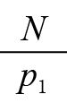
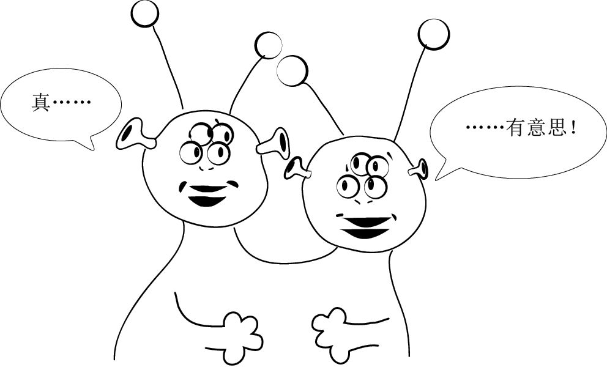

上文中我们证明了所有的正整数都可以表示成2的不同次幂相加的唯一形式。从某种意义上讲，你可以把2的幂次方看作建筑材料，通过加法运算，搭建起正整数这座大厦。接下来，我们将会看到质数通过乘法运算扮演了一个类似的角色：所有正整数都可以表示成质数乘积的唯一形式。2的幂次方很容易确认，不会给数学界带来多少意外发现。质数则不同，它们复杂得多，还有很多未解之谜。
质数是只有1和它本身这两个正约数的正整数。排在前几位的质数是：
2，3，5，7，11，13，17，19，23，29，31，37，41，43，47，53…
1只有一个约数，就是它本身，因此1不是质数。（人们认为1不是质数，还有一个更重要的原因，稍后揭晓。）请注意，2是唯一一个既是偶数又是质数的数字。因此，有人可能会认为2是最奇怪的质数。
有3个或3个以上约数的正整数叫作“合数”，因为它们可以被分解成多个因数相乘的形式。排在前几位的合数是：
4，6，8，9，10，12，14，15，16，18，20，21，22，24，25，26，27，28，30…
例如，4有3个约数：1，2和4。6有4个约数：1，2，3和6。注意，1既不是质数，也不是合数。数学界把1称为“计数单位”（unit），它是所有整数的约数。
所有合数都可以表示成质数乘积的形式。比如，120 = 6×20，由于6和20是合数，可以表示成质数乘积的形式，即6 = 2×3，20 = 2×2×5。因此：
120 = 2×2×2×3×5 = 23×31×51
有意思的是，无论我们以何种方式开始，质因数分解的最后结果都是一样的。这就是“唯一分解定理”（unique factorization theorem）得出的结论。唯一分解定理亦称“算术基本定理”（fundamental theorem of arithmetic），指任何一个大于1的正整数都能分解成有限个质数的乘积的唯一形式。
顺便告诉大家，我们认为1不是质数的真正原因就在于这条定理。例如，12可以分解成2×2×3，也可以分解成1×1×2×2×3，如果把1视为质数，那么质因数分解就无法得出唯一的结果。
一旦知道某个数字如何分解，就可以了解到关于这个数字的很多信息。小时候，我最喜欢的数字是9，但在成长的过程中，我最喜欢的数字也在不断“成长”，而且越来越复杂（例如，π = 3.141 59…，φ= 1.618…，e= 2.718 28…，以及没有小数表达式的i，等等。我们将在本书第10章讨论这些数字。）在接触无理数之前，我一度非常喜欢2 520这个数字，因为在可以被从1到10的所有数字整除的数中，它是最小的一个。它的质因数分解表达式是：
2 520 = 23×32×51×71
只要知道某个数字的质因数分解结果，就可以立刻说出它有多少个正约数。例如，2 520的约数必然是2a×3b×5c×7d 的形式，其中a是0、1、2、3（4种可能），b是0、1、2（3种可能），c是0、1（2种可能），d是0、1（2种可能）。因此，根据乘法法则，2 520有4×3×2×2 = 48个正约数。
算术基本定理的证明需要利用质数的某个属性（所有数论教科书都会在第1章证明这个属性）：如果p是质数，而且是两个或两个以上数字乘积的一个约数，那么p至少是其中一个乘数的约数。例如，
999 999 = 333×3 003
999 999是11的倍数，因此11必然是333或者3 003的约数。（的确如此，因为3 003 = 11×273。）然而，有的合数并不具有这个属性。例如，60 = 6×10是4的倍数，但4既不是6的约数，也不是10的约数。
为了证明质因数分解的唯一性，我们先做一个相反的假设：某个数字的质因数分解结果不止一个。假设N是有两个质因数分解结果的最小数字，例如：
p1p2…pr = N = q1q2…qs
其中，所有的pi和qj项都是质数。因为N肯定是p1的倍数，所以p1肯定是某个qj项的约数。为了方便起见，我们假定p1是q1的约数。由于q1是质数，因此肯定有q1 = p1。把上面的等式除以p1，就会得到：
p2…pr =

= q2…qs这说明也有两个质因数分解结果，但我们假设N才是有两个质因数分解结果的最小数字，因此两者是矛盾的。 □
在有的数字系统中，并不是所有的数字都有唯一的质因数分解结果。例如，火星人长了两个脑袋，因此他们只使用偶数：
2，4，6，8，10，12，14，16，18，20，22，24，26，28，30…
在火星人的数字系统中，6和10被视为质数，因为它们不能分解成更小的偶数。在这种数字系统中，质数和合数严格地交替出现。4的所有倍数都是合数（因为4k = 2×2k），其他的所有偶数（包括6、10、14、18等）都是质数，因为它们无法分解成两个更小的偶数。但是，我们来看180这个数字：
6×30 = 180 = 10×18
在火星人的数字系统中，180有两种不同的质因数分解结果，这证明火星数字系统中的质因数分解不具有唯一性。

1~100中有25个质数，101~200中有21个质数，210~300中有16个质数。随着数字越来越大，质数出现的频率越来越低。（但是，这种减少的趋势无法预测。例如，在301~400和401~500中，分别有16和17个质数，而1 000 001~1 000 100中只有6个质数。）这是有道理的，因为大数有多个约数的可能性更大。
我们可以证明，有时候连续100个数字之中也没有一个质数。如果愿意花时间寻找，你甚至可以发现连续1 000或者100万个数字中也没有一个质数。你不相信的话，我可以立刻为你提供连续99个合数（尽管在这之前就已经出现过同类现象了）。观察下面这99个连续数字。
100! + 2，100! + 3，100! + 4，…，100! + 100
因为100! = 100×99×98×…×3×2×1，所以它肯定可以被2~100的所有数字整除。接下来，我们以100! + 53为例。由于53是100!的约数，因此它肯定也是100! + 53的约数。同理可证，对于所有的2 ≤ k ≤ 100，100! + k都必然是k的倍数，也就是说，它们都是合数。
注意，我们在上述证明过程中根本没有提到100! + 1是不是质数的问题，但我们其实是可以做出判断的。在这里，我们要应用一个非常棒的定理——“威尔逊定理”（Wilson’s theorem）。这条定理指出，当且仅当 (n－1)! + 1是n的倍数时，n为质数。用几个比较小的数字加以检验，就会发现确实如此。1! + 1 = 2是2的倍数，2! + 1 = 3是3的倍数，3! + 1 = 7不是4的倍数，4! + 1 = 25是5的倍数，5! + 1 = 121不是6的倍数，6! + 1 = 721是7的倍数，等等。由于101是质数，根据威尔逊定理，100! + 1是101的倍数，因此它是合数。也就是说，从100!至100! + 100的101个连续数字都是合数。
既然随着数字越来越大，质数的出现频率越来越低，人们自然会想，当数字大到一定程度时，会不会就没有质数了呢？两千多年前，欧几里得告诉我们并非如此。但不能因为他是欧几里得我们就相信他的话，我们还是尽情享受证明的乐趣吧。
定理：质数有无穷多个。
证明：我们反过来假设质数的个数是有限的。既然质数的个数有限，就必然存在最大的质数，我们将这个数字记作P。现在，观察P! + 1这个数字。由于从2到P的所有数字都可以整除P!，因此它们都不可能整除P! + 1。这样一来，P! + 1就必然有一个大于P的约数为质数，而我们假设P是最大的质数，两者是矛盾的！ □
尽管我们永远也无法找到一个最大的质数，但这并不能阻止数学家和计算机科学家寻找更大质数的努力。在我创作本书的时候，已知的最大质数有17 425 170位数。把这个数字写下来，可以写成大约100本跟本书大小、厚度差不多的书。不过，我们也可以把它表示为：
257 885 161– 1
我们之所以能把它以如此简单的形式表达出来，是因为我们可以准确地判断出2n – 1或2n + 1是不是质数。
根据伟大的数学家皮埃尔·德·费马（Pierre de Fermat）的证明，如果p是奇质数，那么2p – 1 – 1必然是p的倍数。我们用前几个奇质数来验证一下。取质数3、5、7、11，我们发现： 22 – 1 = 3是3的倍数，24 – 1 = 15是5的倍数，26 – 1 = 63是7的倍数，210–1 = 1 023是11的倍数。对于合数，我们知道，如果n是偶数，那么2n–1–1必然是奇数，不可能是n的倍数。我们再用前几个奇合数9、15和21验证一下，结果发现：28 – 1 = 255不是9的倍数，214 – 1 = 16 383不是15的倍数，220–1 = 1 048 575不是21的倍数（就连3的倍数都不是）。根据费马的这条定理，如果知道2N–1 – 1不是数字N的倍数，那么我们甚至不需要找出N的约数，就可以根据这个属性确定N不是质数！但是，这条定理反过来却不成立。确实有些合数从某些方面来看像质数（这类数字被称为“伪质数”）。最小的伪质数是341 = 11×31，它就具备2340 – 1是341的倍数这个属性。伪质数有无穷多个，尽管它们出现的频率比较低，但好在我们已经找到了甄别办法。
质数有很多应用，尤其在计算机科学领域。在几乎所有加密算法（包括为互联网金融交易保驾护航的公钥加密系统）中，质数都发挥了核心作用。很多加密算法都利用了这样一个事实：我们可以很快地判断出某个数字是否为质数，但我们还没有找到快速分解大数字的方法。例如，如果我随机选取两个1 000位的质数相乘，答案是一个2 000位数，任何人、任何计算机（除非量子计算机被人们成功地制造出来）几乎都不可能根据这个乘积找出原来的两个质数。人们认为，基于人类无法分解大数字这个特点编制而成的密码（例如公钥加密系统）具有很高的安全性。
几千年来，质数之美一直让人类魂牵梦绕。古希腊人说，如果某个数字等于所有真约数（除自身以外的约数）之和，这个数字就是“完全数”（perfect number）。例如，6的真约数是1、2、3，它们的和正好是6，因此6是一个完全数。第二个完全数是28，它的真约数1、2、4、7、14的和正好是28。接下来的两个完全数是496和8 128。完全数有什么规律呢？不妨考察它们的质因数分解结果。
6 = 2×3
28 = 4×7
496 = 16×31
8 128 = 64×127
看出其中的规律了吗？被乘数是2的幂次方，乘数是比被乘数的2倍小1的质数。（因此，在上述算式中我们没有看到8×15或者32×63，因为15和63都不是质数。）我们可以用下面这条定理对这个规律加以概括。
定理：如果2n–1是质数，那么2n–1×(2n–1)是完全数。
证明：令p = 2n–1，p是质数，我们的目标是证明2n–1p是完全数。2n–1p的真约数有哪些呢？不含p的约数只有1，2，4，8，…，2n–1，它们的和为2n – 1 = p。其他约数（不包括2n–1p）则都包含p，这些约数的和为 p(1 + 2 + 4 + 8 + … + 2n–2) = p (2n–1 – 1)。因此，所有真约数的和为:
p + p(2n–1 – 1) = p［1 + (2n–1 – 1)］ = 2n–1p
证明完毕。 □
伟大的数学家莱昂哈德·欧拉（Leonhard Euler，1707—1783）证明了所有完全数都是偶数。在我创作本书的时候，人们已经发现了48个完全数，而且全部是偶数。是否存在完全奇数呢？目前，还没有人知道这个问题的答案。有人认为，如果完全奇数真的存在，它们的位数将超过300。不过，还没有人证明完全奇数肯定不存在。
关于质数，有很多表述简单但却悬而未决的问题。前面已经说过，关于斐波那契数列中的质数是否有无穷多个的问题，现在还没有答案。［已经有人证明斐波那契数列中只有两个完全平方数（1和144）和两个完全立方数（1和8）。］还有一个未解难题被称为“哥德巴赫猜想”（Goldbach’s conjecture），即所有大于2的偶数都是两个质数之和。目前没有人可以证明这个猜想，但是有人证明，如果有反例存在，那么这个数字至少是19位数。［不久前，人们在一个比较相似的问题上取得了突破。2013年，法国数学家哈罗德·贺夫高特（Harald Helfgott）证明了所有大于7的奇数都至多是三个奇质数之和。］最后再介绍一个未解难题。我们把差为2的两个质数定义为“孪生质数”（twin primes）。排在前面的几对孪生质数分别是3和5，5和7，11和13，17和19，29和31，等等。你知道为什么3、5、7是唯一的“质数三胞胎”吗？尽管已经有人证明末位数是1（或者3、7、9）的质数有无穷多个［古斯塔夫·狄利克雷（Gustav Dirichlet）提出的一个命题的特例］，但孪生质数是否有无穷多对的问题仍未找到答案。
在结束本章之前，我们来看一个有点儿可疑的证明，但是我希望大家能相信这个命题。
命题：所有正整数都值得关注！
证明：人们一致认为前几个正整数值得关注。例如，1是第一个正整数，2是第一个偶数，3是第一个奇数，4是唯一一个名副其实的数字（它的英文单词“FOUR”正好有4个字母）。我们反过来假设有的正整数不值得关注，那么必然有第一个不值得关注的正整数，我们把它记作N。但是，作为第一个不值得关注的正整数，N必然因此引起关注！因此，不值得我们关注的正整数是不存在的！